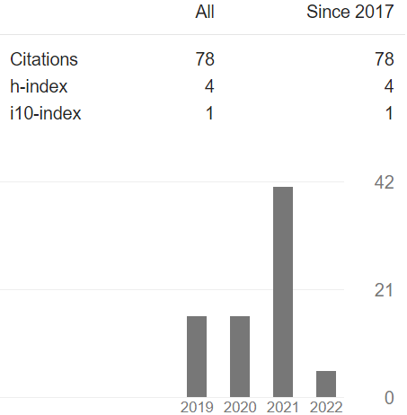

Anjana Parwat Singh
Senior Research Fellow (PhD Student)
Department of Computer Science and Engineering
Indian Institute of Technology Hyderabad (IIT Hyderabad), India
Address: Room No. G-414, Brahmagupta Hostel,
Indian Institute of Technology Hyderabad, India (502285)
Email: cs17resch11004 [at] iith [dot] ac [dot] in
Department of Computer Science and Engineering
Indian Institute of Technology Hyderabad (IIT Hyderabad), India
Address: Room No. G-414, Brahmagupta Hostel,
Indian Institute of Technology Hyderabad, India (502285)
Email: cs17resch11004 [at] iith [dot] ac [dot] in
About Me
-
Hello everyone!!! I am Anjana Parwat Singh. Currently, I'm working as a senior research fellow (a Ph.D. student) under
the supervision of Dr. Sathya Peri
at the Department of Computer Science and Engineering of
Indian Institute of Technology Hyderabad. I completed my M.Tech in Computer Science with distinction from the
University of Hyderabad (UoH) under the guidance of
Dr. Rajeev Wankar.
My research interests broadly span parallel and distributed systems. I have been primarily focusing on blockchain technology to develop sound and
scalable methodologies for building efficient smart contract execution frameworks. I also do research in developing efficient software
transactional memory systems (STMs) and concurrent data-structures.
You can find my CV [here].
Google Scholar Metrics |
Recent! |
|---|---|
|
 More details → 


|
Education
- Doctor of Philosophy in Computer Science (July 2017 - January 2022) from Indian Institute of Technology Hyderabad, India, (Pursuing).
- Master of Technology in Computer Science, (July 2014 - September 2016) from University of Hyderabad, India, (8.71 CGPA) -- (83.88 %).
- Bachelor of Technology in Computer Science, (July 2007 - April 2011) from Rajasthan Technical University, India, (63.89 %).
Publications
Journal Papers
-
Shrey Baheti, Anjana Parwat Singh, Sathya Peri, and Yogesh Simmhan, DiPETrans: A Framework for Distributed Parallel Execution of Transactions of Blocks in Blockchain, Concurrency and Computation: Practice and Experience (CCPE), Volume ?, No. ?, Pages: ??, ISSN: 1532-0634, Wiley Press, New York, USA, (in press). [*All authors contributed equally.].
Conference Papers
-
Anjana Parwat Singh, Hagit Attiya, Sweta Kumari, Sathya Peri, and Archit Somani, Efficient Concurrent Execution of Smart Contracts in Blockchains using Object-based Transactional Memory, In 8th International Conference on Networked Systems (Netys 2020), Marrakech, Morocco, June 2020.
-
Anjana Parwat Singh, Sweta Kumari, Sathya Peri, Sachin Rathor, and Archit Somani, An Efficient Framework for Optimistic Concurrent Execution of Smart Contracts, In 27th Euromicro International Conference on Parallel, Distributed and Network-Based Processings (PDP 2019). Pavai, Italy, February 2019.
-
Anjana Parwat Singh, Priyanka Badiwal, Rajeev Wankar, Swaroop Kallakuri, and C. Raghavendra Rao, Cloud Service Provider Evaluation System using Fuzzy Rough Set Technique, In 13th IEEE International Conference on Service-Oriented System Engineering (SOSE 2019). San Francisco, California, April 2019.
-
Anjana Parwat Singh, Rajeev Wankar, and C. Raghavendra Rao, Design of a Cloud Brokerage Architecture Using Fuzzy Rough Set Technique, In 11th Multi-disciplinary International Workshop on Artificial Intelligence (MIWAI 2017). Tungku, Brunei, November 2017.
Posters/Short Papers
-
Anjana Parwat Singh, Efficient Parallel Execution of Block Transactions in Blockchain, Proceedings of the 22nd International Middleware Conference: Doctoral Symposium (Middleware 2021), Quebec city, Canada, December 2021.
-
Anjana Parwat Singh, Hagit Attiya, Sweta Kumari, Sathya Peri, and Archit Somani, Efficient Concurrent Execution of Smart Contracts in Blockchains using Object-based Transactional Memory, Accepted as a Short Paper for Presentation in 15th Academic Research and Careers for Students Symposium (ARCS 2021), Coimbatore, India, February 2021.
-
Prashansa Agrawal, Anjana Parwat Singh, and Sathya Peri, DeHiDe: Deep Learning-based Hybrid Model to Detect Fake News using Blockchain, In 22nd International Conference on Distributed Computing and Networking (ICDCN 2021). Nara, Japan, January 2021.
-
Anjana Parwat Singh, Sweta Kumari, Sathya Peri, Sachin Rathor, and Archit Somani, Entitling Concurrency to Smart Contracts using Optimistic Transactional Memory, In 20th International Conference on Distributed Computing and Networking (ICDCN 2019). Bangalore, India, January 2019. Recipient of ICDCN 2019 Best Poster Award.
Unpublished Manuscripts
-
Anjana Parwat Singh, Sweta Kumari, Sathya Peri, Sachin Rathor, and Archit Somani, OptSmart: A Space Efficient Optimistic Concurrent Execution of Smart Contracts.
-
Priyanka Badiwal, Anjana Parwat Singh, Rajeev Wankar, and C. Raghavendra Rao, DRONA: A Data-driven Randomized Algorithm for Complex Optimization Problems.
Ongoing Projects
- OptNest: Optimistic Concurrent Execution of Nested Transactions in Blockchain
- DeHiDe: Deep Learning-based Hybrid Model to Detect Fake News using Blockchain
- BDIDS: A Blockchain-based Distributed Intrusion Detection System for IoT Networks
Research Association
I am very fortunate to work with:- Prof. Sathya Peri, Indian Institute of Technology Hyderabad, India.
- Prof. Rajeev Wankar, University of Hyderabad, India.
- Prof. C. Raghavendra Rao, University of Hyderabad, India.
- Dr. Archit Somani, Technion, Israel.
- Dr. Sweta Kumari, Technion, Israel.
Achievements and Services
Achievements
- Won Best Poster Award at Doctoral Symposium Abstracts at ICDCN 2019 for poster on Entitling Concurrency to Smart Contracts Using Optimistic Transactional Memory.
- Qualified UGC NET India - December 2015 for Lectureship, [Score Card].
- Qualified GATE India for four consecutive years from 2014 to 2017, and awarded GATE scholarship for pursuing M.Tech. (2014 - 2016).
Services
- Gave a talk on Ethereum Blockchain and Smart Contracts during Teqip Workshop on Blockchain Technologies at IIT Hyderabad from December 16th - 20th, 2019.
- Co-organized the Teqip Workshop on Blockchain Technologies at IIT Hyderabad from December 16th - 20th, 2019.
- Student Placement Coordinator at the School of Computer and Information Sciences of University of Hyderabad from July 2015 - July 2016.
- Coordinator for Works Application Co., Ltd. placement drive in Hyderabad from October 18th - 19th, 2015.
(Sub)Reviewer for the Conferences/Journals
Teaching Assistant
- CS5320: Distributed Computing, IIT Hyderabad. Spring 2021, 2020, Autumn 2018.
- CS1303: Introduction to Programming Languages, IIT Hyderabad. Autumn 2019.
- CS5280: Concurrency Control in Transactional System, IIT Hyderabad. Autumn 2021, 2019.
- CS5300: Parallel and Concurrent Programming, IIT Hyderabad. Autumn 2020, Spring 2019.
- CS3523: Operating System 2, IIT Hyderabad. Spring 2019, 2018.
- CS5530: Basics of BlockChains: Distributed Computing Perspective, IIT Hyderabad. Autumn 2018.
- CS3510: Operating System 1, IIT Hyderabad. Autumn 2018, Autumn 2017.
- CS2323: Computer Architecture, IIT Hyderabad. Autumn 2017.
- CS773: Grid and Cloud Computing, SCIS, University of Hyderabad. Autumn 2016.
- CS751: Parallel Computing, SCIS, University of Hyderabad. Spring 2015.